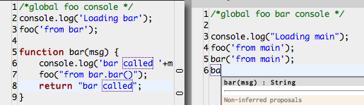
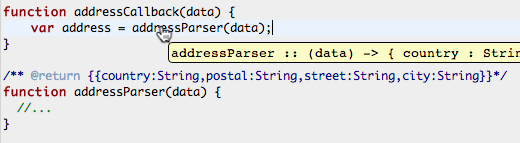
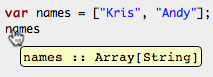
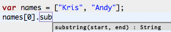
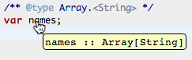
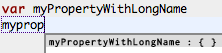
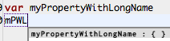

| Installing and running Scripted | |
| Long running server | The Scripted server (a Node application) is now a long running process. Previously it was restarted
each time the command scr or scripted was run. Now it is started if not
currently running, the launch scripts support options to restart it.
The server logs are now being written to the /tmp/scripted.log on mac/linux and %TEMP%\scripted.log on windows. |
| Launch script updates | The launch scripts have been changed to behave in a more intuitive way: scr - running it with no options will open Scripted on the current directory. scr [file|directory] - will open Scripted on the specified file or directory. scr -h|--help - show the help options for the launch script (not yet on windows). scr -r|--restart - will restart the server which is now a long running process They now support being linked-to on mac/linux. The windows experience when using the launch scripts is drastically improved. |
| npm installable | This version can now be installed using npm install on all platforms.
The typical install process is: npm install -g scripted The launch scripts (scr/scripted) will then be immediately available to run Scripted. |
| Keybindings | |
| Configurable key bindings |
It is now possible to redefine keybindings via a simple UI. To access
this UI open the 'Help panel' by clicking the question mark icon in the toolbar or
pressing F1. Click the keybinding shortcut for any action to change it. Any changes made to the keybindings are saved in ${user.home}/.scriptedrc/keymap-${os.name}.jsonThere is no reset button yet. To reset the keybindings to their default values simply delete the keymap file. |
| Other keybinding changes |
Scripted-255: Opening help is now assigned to F1 by default. Scripted-176: CTRL-L "center editor on cursor" now also works in Firefox on Macs. |
| Code comprehension | |
| Enhancements to dependency resolution and configuration discovery |
Scripted now recognizes more idioms for extracting the AMD loader configuration from projects:
Scripted-253,
Scripted-239,
GH-Scripted-38.
Scripted-252: Sloppy resolution disabled.
Prior to 0.3 when a dependency was not being found a 'sloppy' resolution would kick in to look for any js file with a
matching name. This would sometimes inadvertently resolve dependencies that should not be resolvable. This creates
the impression that incorrect project structures are in fact correct. In 0.3 we have completely disabled this
'sloppy' mode and instead focus on making the resolution algos more accurate and complete. Scripted-208: Minimal support for
discovering AMD loader config in curl-based projects. Scripted-238: Use AMD resolver config
for AMD modules that are 'commonjs-wrapped'.
Scripted-237: Recognize 'packages'
declarations in AMD loader configuration. Scripted-167: Support for relative path
references in amd module dependencies. Scripted-117: Adopted the
enhanced-resolve library to cover missing cases in handling
relative-path commonjs module references. Scripted-103,
GH-Scripted-22: Added hard-coded support for
'text!' and 'i18n!' AMD loader plugins. Other plugins are treated as 'unsupported' and errors associated with them
are suppressed.
|
| Inferencing of global dependencies | Scripted now recognizes a form of global dependencies for JavaScript files.
When a JavaScript file is not determined to be an AMD style module or a CommonJS syle module, it is
considered a global module (i.e. it doesn't use a module system). For files that have a global module,
the Scripted dependency resolver will look for other global modules that it depends on.
It does this by looking for references to the current JavaScript file in script tags in HTML files.
When a reference is found, Scripted will find all other JavaScript files referenced in that HTML file.
In order to avoid circular dependencies, only JavaScript files that come before the current file are considered referenced.
All global variables from referenced files will be available for content assist and navigation in the current JavaScript file. For example: <html>
<head>
<script src="scripts/foo.js"></script>
<script src="scripts/bar.js"></script>
<script src="scripts/main.js"></script>
</head>
<body/>
</html>
When editing in main.js, you will have access to all global variables defined in both bar.js and foo.js. When editing bar.js, you will have access only to global variables from foo.js. And when in foo.js, you will not have access to any other global variables. Here is a screen shot of performing content assist inside of main.js that depends on bar,js:  As you can see, bar is available in content assist. There are two important things to keep in mind here:
|
| Move to JSHint | Previously Scripted was using jslint as the built in linter. In this version
Scripted has moved to using JSHint. Configuration is still possible using the .scripted file but
Scripted will also look for a .jshintrc file and use that to configure the linter. Fewer linter options
are turned on by default in this version, so it is recommended users take a moment to configure their
linter (through .scripted or .jshintrc) - a sample
.jshintrc file (the one actually used by the Scripted project itself)
is here.
Any configuration in a .scripted file overrides the settings picked up from a .jshintrc file. Scripted searches 'upwards' in the filesystem from the file being edited to the inferred project root when trying to discover a .jshintrc file. Using different config files in different sub-directories is not yet supported. Configuring the linter via .scripted is documented here. |
| Scripted Configuration | |
| Global Configuration via '.scriptedrc' |
It is now possible to share config options across multiple projects. To do so they should be placed in a file: ${user.home}/.scriptedrc/scripted.json instead of a project-specific .scripted file. The shared config options are read before the .scripted file and both sets of options are merged. When there is a conflict, .scripted takes priority. |
| Parse config files using JSON5 |
All Scripted's json-based config files are now parsed using JSON5 instead of plain JSON. JSON5 is an extension of plain JSON with a more user-friendly, forgiving syntax. For example, it allows for comments in JSON formatted text. |
| Configurable tabs/spaces | Previously the tab/space indentation settings for the beautifier
could be configured but they did not necessarily tie up with the defaults for the editor. The editor
configuration options are now exposed for configuration and can be set in the
.scripted file:
{
"editor": {
"expandtab": true,
"tabsize": 4
}
}
expandtab - determines whether tabs are expanded as spacestabsize - the number of spaces that constitute a tab Setting these config options will auto configure the beautifier too, there is no need to configure that separately. |
| Inferencing | |
| Inferring object shape based on usage | Inferencing will now guess the shape of an object (i.e., its valid properties) based on how it is used. For example,
in the following screenshot, there is a function with a single parameter called
address. Based on how the parameter is used, content assist is able to
infer that it has three properties:
|
| Inferring variables before they are declared | Forward referencing of functions and variables will now be recognized by the inferencer
for content assist, hovers, and navigation. For example:  In the screenshot above, even though addressParser is lexically defined after its usage, hovering is still able to determine the function's type. |
| Type inferencing of arrays | Scripted will now be able to infer the type of array elements. It makes
the simplifying assumption that all elements are of the same type.
For array literals, the first element determines the parameterized type of the array. See this screenshot as an example:  And, content assist will work as expected when dereferencing an array:  Scripted also recognizes JSDoc syntax for array parameterization:  The syntax recognized by Scripted is described in the documentation for the Google closure compiler. |
| Content assist and navigation | |
| Smart matching for content assist |
Scripted now performs fuzzy matching for content assist proposals. Typing text in all lower case
will look for proposals case-insensitively:
 Scripted also recognizes CamelCase matching. You can shortcut each fragment in a CamelCased word and the completion engine will match against each fragment portion, as shown here:  |
| Completion templates |
Scripted now has basic support for defining custom completion templates. To use this feature, create a file called
anything.scripted-completions and place this file inside of your .scriptedrc folder (which should
be created in your home directory).
You can see examples of scripted-completions files in the scripted/completions folder of your Scripted installation.
Out of the box, we provide templates for common JavaScript, JQuery, and HTML idioms. But, you can provide your own templates. A full description of the syntax of scripted-completions files are available at the Sublime text documentation. Since many of our users will be familiar with Sublime Text, we provide compatibility with their completions files. If you want to use an existing sublime-completions file, then all you need to do is change the file extension and move it to your .scriptedrc folder. Note that it is possible to place your scripted-completions files in the scripted/completions folder, but this is not recommended since they will be lost on upgrades or re-installs. |
| Click to navigate | Cmd/Ctrl+Click will navigate to the definition of the currently selected identifier. Cmd/Ctrl+Shift+Click will navigate to the definition in the other editor pane. This behavior mimics that of F8 and Shift+F8. |
| History and navigation improvements | The complete page state of your scripted editor will be stored in browser history. This includes current file, selected text, and scroll position for both the main editor and the side panel. Going backwards and forwards in history will properly open or close the side panel, as well as set selections and scroll positions. |
| Shell commands | |
| Event-driven Shell Actions |
Scripted-145 added support to
allow user-configured shell commands to be triggered by certain editor events. Notably, commands can be
executed when a file is saved or when the editor first opens.
Detailed documentation on this feature can be found on the Scripted-Wiki. |
| Console UI to display shell command results |
Scripted-110: A simple console-like UI pops out to display the result of any executed shell commands. |
| Editor changes | |
| Mark occurrences | Scripted now implements lexical mark occurrences. Any selected word and all occurrences of
that word in the current file will be outlined.
For example, see this screenshot: Mark Occurrences is configurable in your .scripted file using the following configuration options:
{
mark_occurrences : {
interval : 500,
disable : false,
retain : false
}
}
|
| Dialogs | |
| Enhancements to Open File and Look in Files search dialogs | Besides having a new look. These dialogs now perform a dynamic incremental
search. A search kicks of as soon
as enough characters have been typed (0 characters for 'Open File' searches and 3 characters for 'Look in File'
searches). As the search is still running you can continue to type and the still executing query is
dynamically updated as you type. The backend optimizes dynamic query updates by using the already found results
while changing the search-term for the remainder of an ongoing search.
Searches are also automatically paused when the number of displayed results exceeds what can be visibly displayed on-screen. A paused search is automatically resumed when you scroll near the end of the visible results area.
The search text is also now pre-filled when the dialogs are opened using the current editor selection or previously used text, if available. |
| Navigator context menu | It is now possible to add new files and folders, as well as delete or rename existing
files and folders, from the scripted navigator through a navigator context menu.
The context menu is invoked anywhere in the navigator area by right-clicking on a navigator element like a file or folder. The four context menu options are:
Each context menu action opens a modal dialog that either prompts the user to confirm the operation, as in the case of deleting a resource, or asks the user for input. If an error occurs during the resource operation, for example, renaming a folder, an error message is displayed to the user and the dialog remains open. Closing the dialogs can be done by either clicking the Cancel button, pressing Esc, or clicking outside the dialogs. |